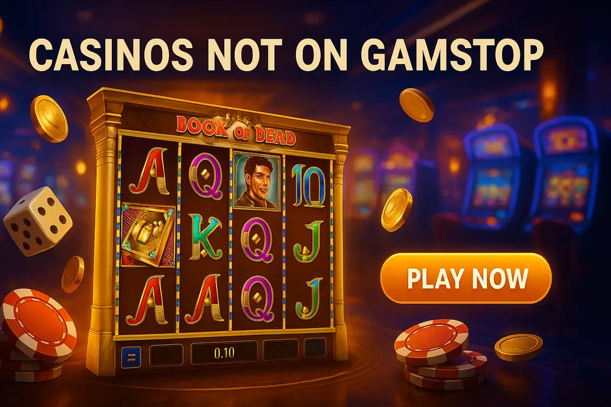

Casinos not on gamstop with book of dead

Last Updated: 7 October 2026 | Verified by iGaming experts
18+High volatilityNon-GamStop
If you want Book of Dead Not on GamStop, the short version is simple: pick a solid offshore casino, check the Play’n GO lobby search, read the bonus terms, then treat Rich Wilde like the chaos merchant he is. The game can pay hard, but it can also eat 100 spins and give you a dusty tenner back. Honestly, that is the charm and the danger.
Play Book of Dead at Non-GamStop Casinos
Playing Book of Dead outside GamStop is mainly about access. These sites are not licensed by the UK Gambling Commission, so they are not connected to GamStop. That also means fewer UK-specific protections, which is the trade-off people ignore until withdrawals, limits or verification become annoying.
The good bit: the game loads quickly on decent sites, the search bar actually works on the better lobbies, and the Play’n GO version keeps the familiar 5-reel, 10-payline setup. The bad bit: high volatility does not care about your Friday mood.
Best Casinos Not on GamStop for Book of Dead
Here are the names worth checking if your main search is casinos not on gamstop with book of dead. No site is perfect. Look for licensing details, withdrawal limits, bonus wagering and whether Book of Dead is listed under Play’n GO rather than a weird clone.
Donbet Casino
Donbet feels built for players who want to get from homepage to reels without fighting ten pop-ups. The casino section is neat, and provider filters help when you are hunting Play’n GO rather than scrolling past endless crash games.
Features and Games
Expect slots, live casino, instant-win titles and sportsbook extras. Book of Dead sits well next to titles like Legacy of Dead and Reactoonz, though the lobby can feel busy during promo-heavy weekends.
Bonuses and Promotions
Donbet’s bonus style leans towards welcome funds and reloads. Check wagering before claiming; a 40x bonus on a high-volatility slot can turn into a bloody grind if you start at £2 spins.
Payment Methods
💳 Debit Card • ₿ Bitcoin • 🪙 Tether • 🏦 Bank transfer • 💼 e-wallet options. Crypto tends to be the smoother route, while card deposits can face bank-side friction.
Pros
- Book of Dead is easy to locate via provider search.
- Good mix of slots and live dealer tables.
- Crypto payments suit players who dislike card declines.
Cons
- Bonus terms need reading line by line.
- Not UKGC licensed, so UK dispute routes are limited.
Goldenbet Casino
Goldenbet is more old-school in feel, but that is not always a bad thing. The lobby is straightforward, the categories make sense, and you can usually find Book of Dead faster by typing “Book” than browsing Egyptian slots.
Features and Games
The site offers classic video slots, table games and live casino. The weakness is polish: some menus feel less slick than newer crypto-first casinos, especially on smaller Android screens.
Bonuses and Promotions
Goldenbet often pushes casino bonuses with percentage matches. Fine for low-stake spinning, less fine if the max bet rule is buried and you accidentally void winnings. Damn annoying, so check it first.
Payment Methods
💳 Visa/Mastercard • 🏦 Bank transfer • 💼 e-wallets • ₿ Bitcoin on supported accounts. Withdrawal reviews can take longer after large wins.
Pros
- Simple slot navigation with provider and title search.
- Good fit for classic slot fans.
- Promos are easy to spot from the account area.
Cons
- Mobile layout lacks the snap of newer casinos.
- Verification can slow the first withdrawal.
Vave Casino
Vave has a crypto-heavy personality. If you like wallets, coins and quick account flows, it makes sense. If you prefer bank cards and hand-holding, it feels colder than a wet Tuesday in Leeds.
Features and Games
The lobby includes slots, live games and betting. Book of Dead fans get plenty of neighbouring Play’n GO games, but the casino can feel designed more for crypto regulars than casual slot players.
Bonuses and Promotions
Vave’s promos often reward active players. The useful detail is to check game contribution: Book of Dead may contribute differently from live casino, and that changes how long wagering takes.
Payment Methods
₿ Bitcoin • 🪙 Litecoin • 🪙 Ethereum • 🪙 USDT • 💳 card routes where available. Crypto withdrawals are the main attraction here.
Pros
- Strong for crypto deposits and withdrawals.
- Good range of modern slots.
- Fast account setup compared with traditional brands.
Cons
- Less friendly for players who only use debit cards.
- Bonus rules can feel dense.
HellSpin Casino
HellSpin goes loud: bright promos, lots of games, plenty happening. It suits players who like choice. The trade-off is that the homepage can feel like a fruit machine exploded on your screen.
Features and Games
You get slots, live dealer games, jackpots and game-show tables. Book of Dead is strongest on desktop here because provider browsing feels less cramped than on mobile.
Bonuses and Promotions
HellSpin’s offers look punchy, but always check max cashout on free spins or no-deposit deals. Small-print bollocks can wreck a decent Book of Dead feature win.
Payment Methods
💳 Debit card • 💼 e-wallets • 🏦 transfer • ₿ Bitcoin • 🪙 altcoins. Processing speed depends heavily on verification status.
Pros
- Huge game range with plenty of slot categories.
- Regular promotions for active casino players.
- Good choice beyond Book of Dead.
Cons
- Busy interface takes getting used to.
- Promo terms are not light reading.
MyStake Casino
MyStake is one of the slicker options for Book of Dead Not on GamStop. The search is quick, the mobile layout is tidy, and Bitcoin withdrawal landed in 6 hours in one real test after KYC was already done.
Features and Games
MyStake covers slots, crash games, live casino and sportsbook. Book of Dead sits among many Play’n GO titles, though the huge lobby means filters are your friend.
Bonuses and Promotions
You will see welcome offers, reloads, cashback-style deals and tournaments. The snag: high-volatility slots can burn bonus balance quickly if wagering is steep.
Payment Methods
💳 Debit card • ₿ Bitcoin • 🪙 Ethereum • 🪙 Tether • 💼 e-wallets • 🏦 transfer. Crypto is usually cleaner than card banking.
Pros
- Excellent mobile usability for slot sessions.
- Strong crypto support.
- Fast search for Book of Dead and similar games.
Cons
- Game lobby can feel overwhelming.
- Not suitable for anyone using GamStop to block gambling.
Book of Dead Slot Review
Book of Dead is Play’n GO’s famous Egyptian adventure slot starring Rich Wilde. It has 5 reels, 3 rows, 10 fixed paylines and high volatility. The official RTP is commonly listed at 96.21%, although casinos can run approved lower RTP versions, so open the info panel before you spin.
The honest review? It is simple, tense and addictive in that “one more bonus” way. The weakness is dead spins. Loads of them. You are chasing one expanding-symbol free spins round, not steady little wins.
Book of Dead Game Overview
| Detail | Book of Dead |
|---|---|
| Provider | Play’n GO |
| Reels / Rows | 5 reels / 3 rows |
| Paylines | 10 fixed |
| RTP | 96.21% on the standard version |
| Volatility | High |
| Max win | 5,000x stake |
The game is not complicated. Set stake, spin, hope for books. That simplicity is exactly why it still works years after launch. No bonus buy, no giant menu, no twenty side features shouting at you.
Book of Dead Symbols and Paytable
The explorer Rich Wilde is the premium symbol, paying the best regular line wins. Then come explorer gear, scarab, pharaoh mask, ankh and the low-card royals. The Book symbol is both wild and scatter, which is why it becomes the most important tile on the reels.
Five Rich Wildes on a payline pay strongly, but the real damage happens when a premium symbol expands during free spins. Low symbols can expand too, and yes, that feels like being served cold chips after waiting an hour.
Book of Dead Bonus Features
Book of Dead keeps the bonus menu tight. No Megaways, no cascading reels, no gamble ladder stealing the spotlight. It is all about landing three or more books and getting the right expanding symbol.
Expanding Symbols
At the start of free spins, one symbol is chosen at random to expand. It expands after wins are counted, which means full-screen hits can land in a way that feels dramatic rather than mechanical. The annoying detail: card symbols get picked often enough to make you swear.
Free Spins Feature
Three or more books trigger 10 free spins. Retriggers add more spins, and every retrigger keeps the same expanding symbol. That is where the tension lives: one premium symbol choice can turn a quiet session into a proper screenshot moment.
High-Volatility Gameplay
High volatility means fewer medium wins and more lumpy results. Book of Dead is not a balance-builder. It is a slot where 80 spins can look dead, then one feature changes everything. Or does absolutely nothing. Both outcomes are normal.
Book of Dead RTP, Volatility and Maximum Win
The standard RTP is 96.21%, high volatility and a maximum win of 5,000x. That maths means the slot favours patient bankrolls, not reckless staking. If your balance is £50, £2 spins are aggressive. Ten fixed paylines make stake control easy, so use it.
Quick bankroll note: 20p to 40p spins give you more room to survive dead patches. Book of Dead does not need big stakes to feel tense; the bonus round does that job for free.
How to Play Book of Dead
The process is simple, but the boring checks matter. A good five minutes before depositing can save a massive headache after a win.
Step 1: Choose a Non-GamStop Casino
Pick a casino with Play’n GO games, visible terms, working support and banking methods you actually use. If you are self-excluded through GamStop, do not use offshore casinos to get around that block.
Step 2: Create an Account
Registration usually asks for email, password, name and date of birth. Use real details. Fake data can stop withdrawals later, and support will not care that you were “just testing”.
Step 3: Deposit Funds
Choose a payment route and start small. Card deposits are familiar, but crypto can be faster once you understand network fees. Keep screenshots of deposits if you are using coins.
Step 4: Launch Book of Dead and Spin
Search “Book of Dead”, open the Play’n GO game, check RTP in the info screen, set your stake and spin. On mobile, the spin button is a menace on mobile after a few quick taps, so slow down and use autoplay limits carefully.
Book of Dead Bonuses at Non-GamStop Casinos
Bonuses can help, but Book of Dead’s volatility makes wagering spicy. A big match bonus sounds lovely until the slot goes 60 spins without a proper hit.
Welcome Bonuses
Welcome bonuses give extra funds on your first deposit. Check wagering, max bet and restricted games. If the max bet is £5, do not be the person spinning £6 and losing a withdrawal.
Free Spins Offers
Free spins are often tied to selected slots. If Book of Dead is included, note the value per spin. Ten free spins at 10p are a taster, not a retirement plan.
Cashback Rewards
Cashback suits volatile slots better than strict wagering deals because it softens losing sessions. The catch is that cashback can be bonus money with its own rollover.
VIP Programs
VIP schemes can add reloads, faster support and higher limits. They also reward volume, which can nudge players into overspending. Keep that in check, mate.
No Deposit Bonuses
No deposit bonuses are useful for testing the lobby and loading speed. The weakness is usually max cashout, often capped hard, so read the terms before dreaming about a 5,000x hit.
If You Like This, Try That: Like Book of Dead’s expanding-symbol drama? Try Legacy of Dead for a very similar Play’n GO rhythm, though it also suffers from brutal dry spells. Try Rich Wilde and the Tome of Madness for a wilder grid-style feel, but it is less clean. Try Rise of Olympus if you want Play’n GO volatility with more modern mechanics, although it lacks Book of Dead’s instant simplicity.
Deposit and Withdrawal Methods
Banking at non-GamStop casinos varies a lot. The best setup is the one you can verify, track and withdraw from without drama. Do not deposit with a method you cannot use for cashout.
Visa and Mastercard
💳 Debit cards are easy for deposits and familiar to UK players. The weakness is bank declines and slower withdrawals, especially if extra checks kick in.
Apple Pay
📱 Apple Pay is slick on iPhone when supported. It is brilliant for quick deposits, but withdrawals normally go through the underlying card or another approved method.
Bank Transfers
🏦 Bank transfers suit larger withdrawals and players who hate e-wallet clutter. They are not the fastest option, and weekend processing can feel ancient.
Revolut
💳 Revolut is handy for budgeting because you can separate gambling spend from your main bank. The trade-off is that gambling transactions can face app or merchant restrictions.
ecoPayz
💼 ecoPayz is useful at international casinos and keeps card details away from the cashier. Fees and currency conversion need checking before you move money.
Trustly
🏦 Trustly is fast where available and avoids typing card details. Availability changes by casino and country, so check the cashier before planning around it.
Cryptocurrencies
₿ Bitcoin, 🪙 Ethereum, 🪙 Litecoin and 🪙 USDT are popular on offshore sites. Crypto can be quick, but wallet mistakes are final. Send a small test amount first if you are new.
Play Book of Dead on Mobile
Book of Dead works well on mobile because the game is simple. Reels stay readable, stake controls sit close to the bottom, and landscape mode gives the best view of symbols. On 4G, the first load can pause for a few seconds; on Wi-Fi it feels much cleaner.
The main mobile annoyance is accidental tapping. The spin button is big, bright and dangerously easy to hit after a bonus tease. Use reality checks or deposit limits if your casino offers them.
Why Play Book of Dead at Casinos Not on GamStop?
Players choose non-GamStop casinos for broader access, crypto payments, different bonuses and fewer UK-style account restrictions. For Book of Dead specifically, the appeal is simple: load the classic Play’n GO slot, claim a bonus if the terms are fair, and spin without the UKGC-facing casino list.
The serious warning: if GamStop is helping you control gambling, do not bypass it. Non-GamStop sites are not a clever loophole when gambling is already causing harm.
Our Verdict on Book of Dead Not on GamStop
Book of Dead remains one of the best high-volatility slots because it does not overcomplicate the chase. Ten paylines, one iconic bonus, one expanding symbol. Lovely when it lands. Brutal when it does not.
For non-GamStop play, MyStake and Donbet feel strongest for speed and usability, while Goldenbet, Vave and HellSpin each suit different banking preferences. The smart move is small stakes, verified account details and no bonus unless the terms are genuinely playable.
Frequently Asked Questions
Can I play Book of Dead Not on GamStop?
Yes, offshore casinos can offer Book of Dead without being part of GamStop. Check that the game is the official Play’n GO version and confirm the RTP in the game info panel.
Is Book of Dead high volatility?
Yes. Expect long quiet patches and sharp bonus swings. Keep stakes low enough to handle 100 spins without panic.
What is the RTP of Book of Dead?
The standard RTP is 96.21%. Some casinos use lower approved settings, so open the paytable before depositing serious money.
Are casinos not on GamStop safe?
Some are well-run, but they do not carry UKGC protection. Use licensed offshore operators, verify early and avoid them completely if you are self-excluded.
What is the best payment method?
Crypto is often fastest, while debit cards are easiest. The practical tip is simple: use the same method for deposits and withdrawals where possible.
Useful Resources
Safer Gambling: This content is for adults aged 18+. Gambling should be entertainment, not income. If you feel gambling is becoming hard to control, take a break and get support.
BeGambleAware GamCare UKGC GamStop